🧭
工程实践提示：示例中的模型地址、数据库账号和密钥均应通过环境变量或独立配置文件注入；部署前还需补充权限控制、输入校验、超时重试、日志脱敏、来源引用与离线评估。
学习目标
- 了解项目开发背景
- 掌握融合本地知识的RAG系统实现过程
1 Ollama简介
随着人工智能技术的快速发展，大型语言模型 LLM 已成为NLP领域的重要工具。然而，这些模型的运行通常需要大量的计算资源和复杂的部署流程。为了解决这个问题，Ollama应运而生，成为了一个高效的本地大语言模型LLM运行专家。
Ollama是一个开源的大型语言模型服务工具，它帮助用户快速在本地运行大模型。通过简单的安装指令，用户可以执行一条命令就在本地运行开源大型语言模型，如Llama 2。Ollama极大地简化了部署和管理LLM的过程，使得用户能够快速地在本地运行大型语言模型。
2 Ollama的安装
2.1 下载安装Ollama
- Ollama主页：https://ollama.com/ ，支持macOS, Linux 和 Windows 系统，如果是macOS、Linux系统，直接安装使用即可；如果是Windows，需要按照以下教程进行安装使用：
- 点击下载按钮，获取
OllamaSetup.exe安装程序。
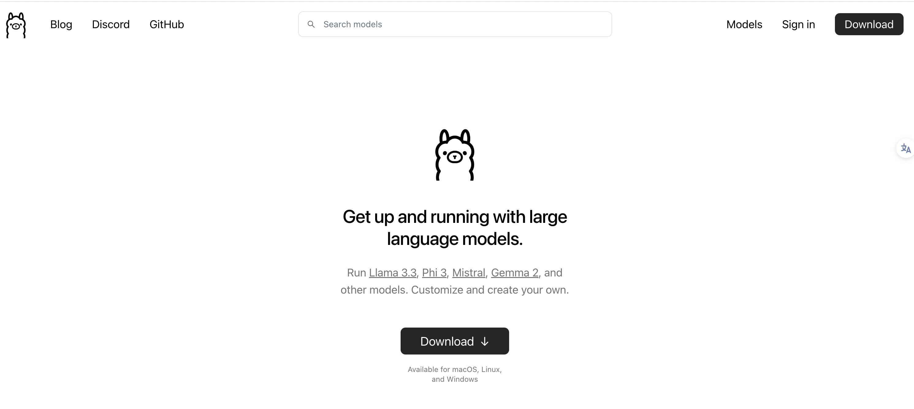
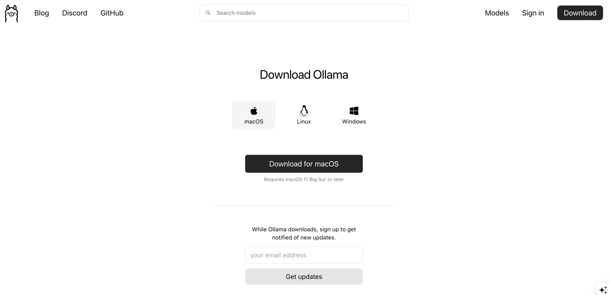
- 双击安装文件，点击「Install」开始安装。目前的Ollama会默认安装到C盘，路径如下：
【本地用户目录】\AppData\Local\Programs\Ollama，并不会让用户自定义选择安装路径。
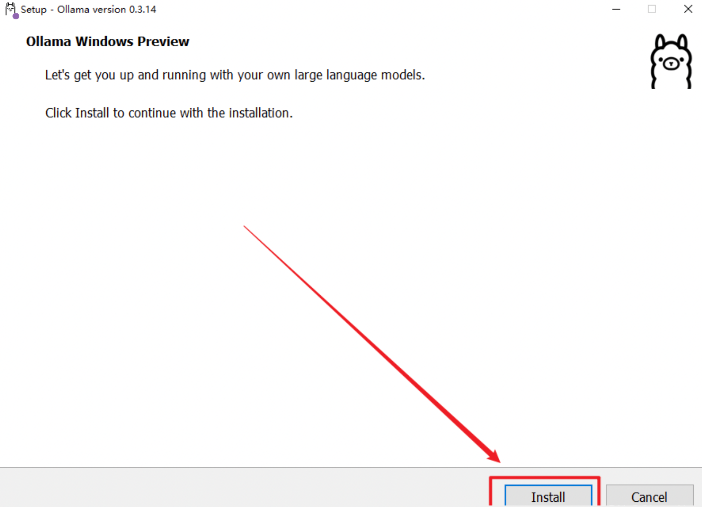
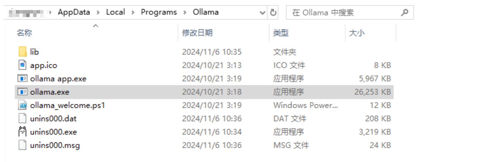
- 安装完成后，会在电脑右下角出现Ollama图标，可以不用先启动Ollama，先退出做一些必要路径的配置！右键图标，会出现退出的按钮「Quit Ollama」，注意：一定要退出Ollama，否则下边的环境配置无法生效！
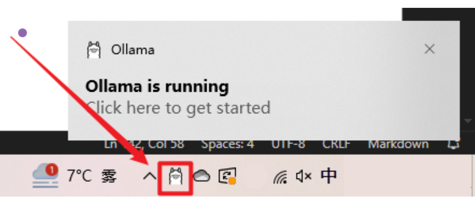
2.2 环境配置
-
关闭开机自启动（可选）：
- Ollama 默认会随 Windows 自动启动，可以在「文件资源管理器」的地址栏中访问以下路径，删除其中的Ollama.lnk快捷方式文件，阻止它自动启动。
Text%APPDATA%\Microsoft\Windows\Start Menu\Programs\Startup
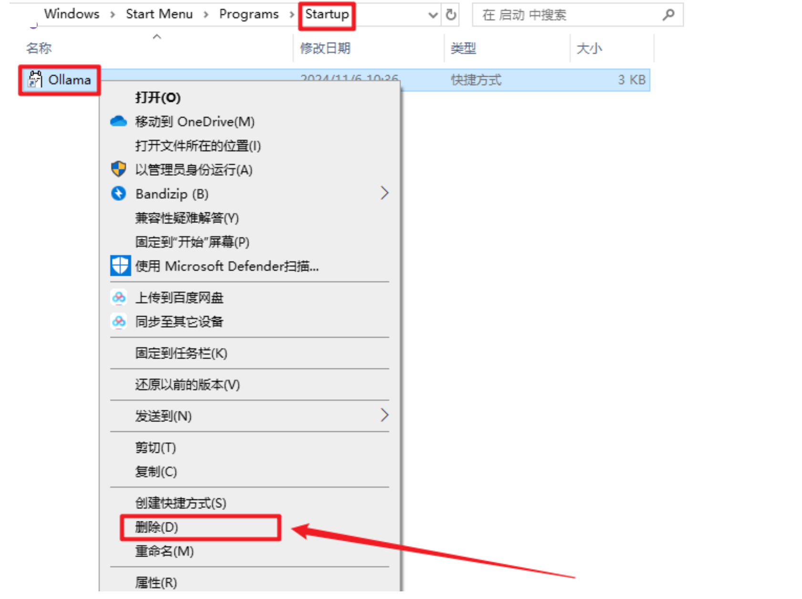
-
配置环境变量（必须）：
- Ollama 的默认模型存储路径如下：【本地用户目录】\models，无论 C 盘空间大小，需要安装多少模型，都建议换一个存放路径到其它盘，否则会影响电脑运行速度。
- 打开「系统环境变量」，新建一个系统变量OLLAMA_MODELS ，然后设置ollama模型的存储路径。
- 变量名：OLLAMA_MODELS
- 变量值（路径）：【本地路径】
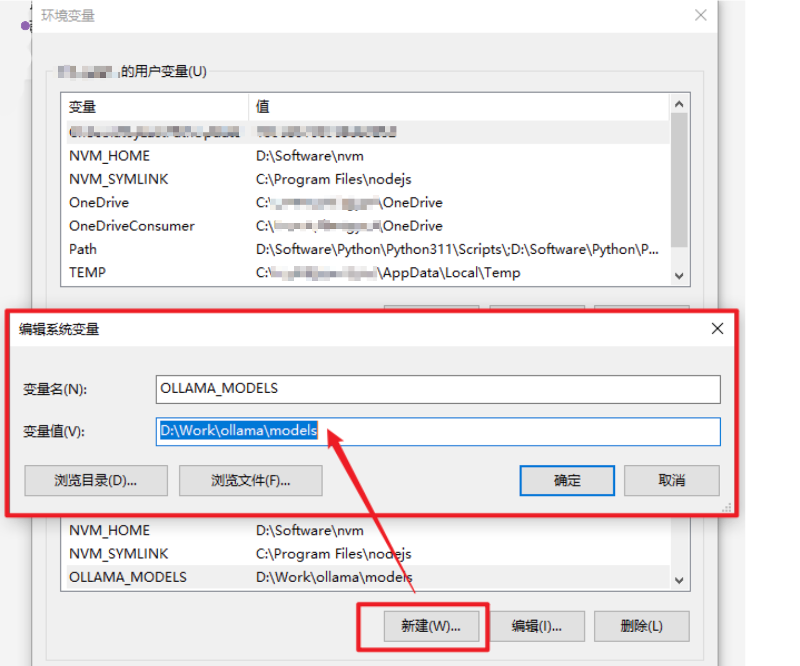
2.3 运行Ollama
- 将上述更改的环境变量保存后，在「开始」菜单中找到并重新启动 Ollama。找到ollama.exe的所在位置，在该位置打开cmd
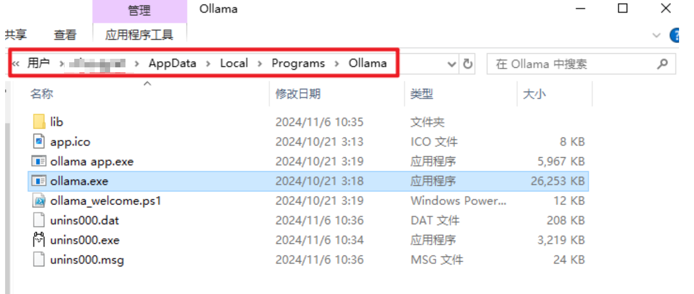
- 执行指令
ollama run <模型名称>，首次执行会从模型库中下载模型，所需时间取决于你的网速和模型大小。模型库地址：https://ollama.org.cn/library
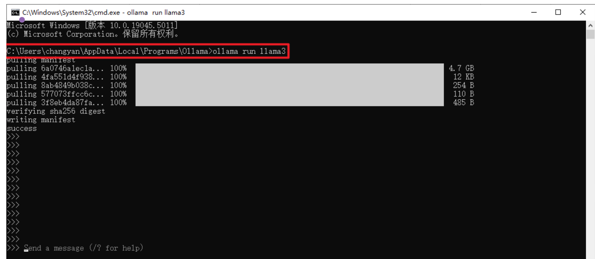
- 在Ollama模型库中，比较常用的LLM模型有：
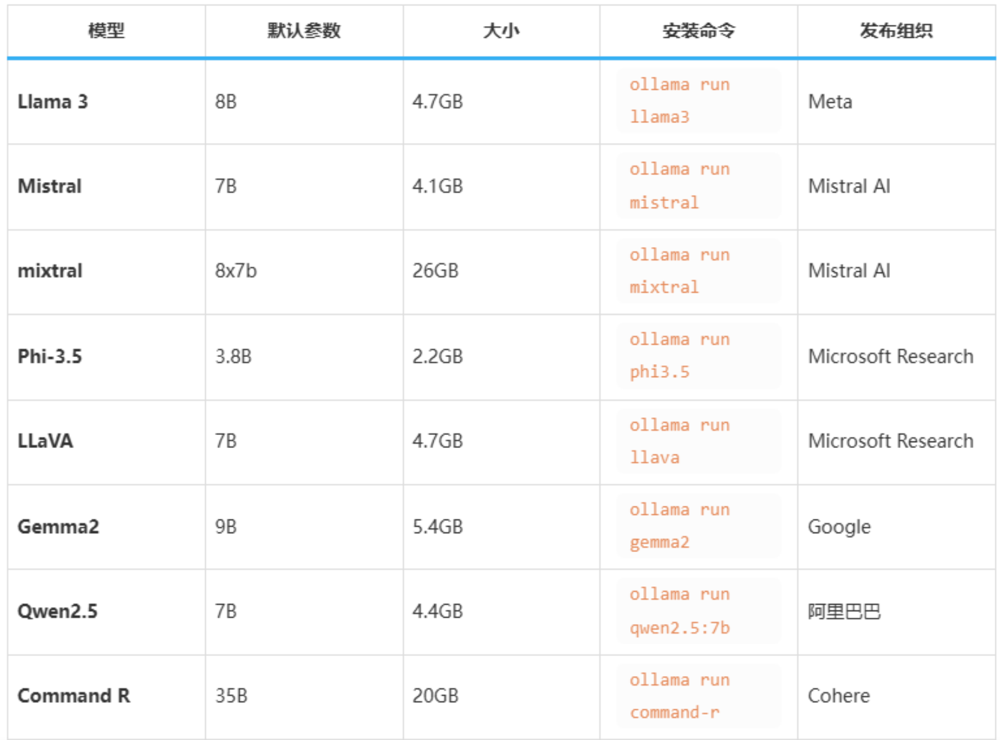
运行7B至少需要8GB显存，运行13B至少需要16G显存，如果没有GPU默认加载CPU；如果有默认加载GPU
- 等待下载模型完成后，就可以使用了：
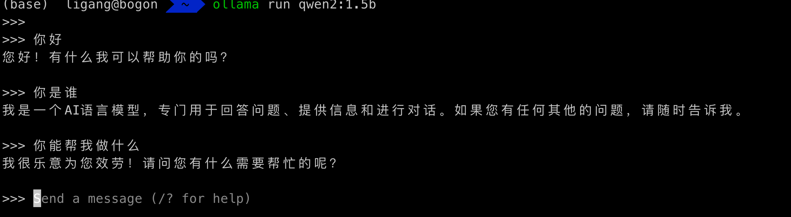
3 在 Python 中使用 Ollama API
-
环境准备
- 在开始使用 Python 与 Ollama API 交互之前，请确保您的开发环境满足以下条件：
Text安装ollama库: pip install ollama
-
代码实现：
- 方式1
Pythonimport ollama # 聊天式 response = ollama.chat(model='qwen2:1.5b', messages=[{'role': 'user', 'content': '为什么天空是蓝色的？', }]) print(response) print(response['message']['content']) # 生成式 ## response = ollama.generate(model='qwen2:1.5b', prompt='为什么天空是蓝色的？')
- 方式2
Python# 可以远程调用ollama from ollama import Client # client = Client(host='http://192.168.1.100:11434') client = Client(host='http://127.0.0.1:11434') response = client.chat(model='qwen2:1.5b', messages=[ { 'role': 'user', 'content': '为什么天空是蓝色的？', }, ]) print(response['message']['content'])
- 方式3（了解）
- 可以通过设置
stream=True启用响应流，使函数调用返回一个 Python 生成器，其中每个部分都是流中的一个对象。
- 可以通过设置
Pythonimport ollama stream = ollama.chat( model='qwen2:1.5b', messages=[{'role': 'user', 'content': '为什么天空是蓝色的？'}], stream=True, ) for chunk in stream: print(chunk['message']['content'], end='', flush=True)
4 LangChain调用
- 环境准备
Text
安装langchain库: pip install langchain 安装langchain_community库: pip install langchain_community
-
代码实现
Pythonfrom langchain_community.llms import Ollama host="xxx" port="xxx" #默认的端口号为11434 # 如果自己本地系统有ollama服务，可以省略base_url llm=Ollama(base_url=f"http://{host}:{port}", model="qwen2:1.5b",temperature=0) res=llm.invoke("你是谁") print(res)
5 requests调用
- 环境准备
Text
安装requests库: pip install requests
-
代码实现
Texthost="xxx" port="xxx" url = f"http://{host}:{port}/api/chat" model = "qwen2:1.5b" headers = {"Content-Type": "application/json"} data = { "model": model, #模型选择 "options": { "temperature": 0. #为0表示不让模型自由发挥，输出结果相对较固定，>0的话，输出的结果会比较放飞自我 }, "stream": False, #流式输出 "messages": [{ "role": "system", "content":"你是谁？" }] #对话列表 } response=requests.post(url,json=data,headers=headers,timeout=60) res=response.json() print(res)
本节小结
本章节主要介绍了利用Ollama工具实现本地大模型的基本应用。